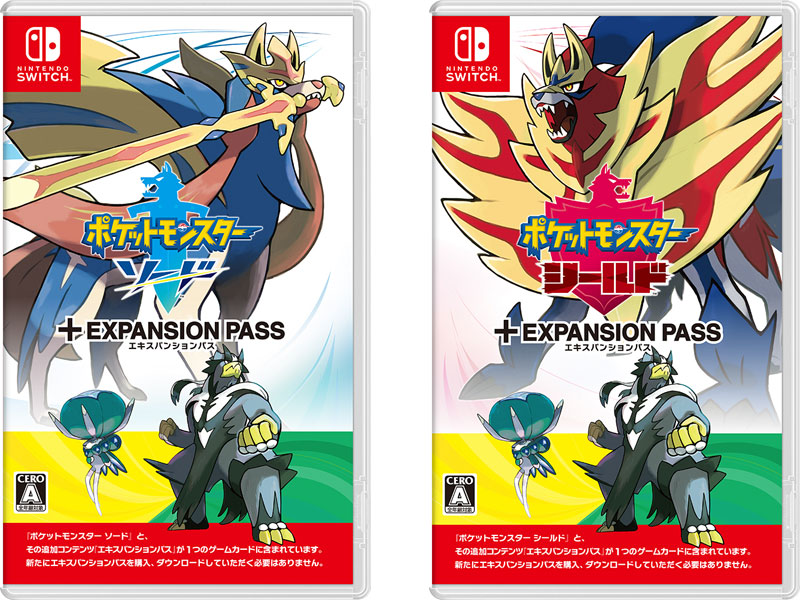

後期プロジェクト（自己紹介）
自己紹介
名前：佐藤 優樹（さとう ゆうき）
好きなことは？
最近買ったものは？
次いでに、最近、私がやっているゲームたちの紹介
また、特にプレイしているのは、

ポケモンです！
気になったものがあればぜひ！
感想とか
杉本理 教授、一年間ありがとうございました！！！！！ オンラインとなってしまっていろいろと大変なこともあり、
また、うまくできなかったことも多々ありましたが、とりあえずはここまで来れてよかったです。人様に自慢できるような
くらいの腕前ではないので、もう少し独学でも勉強してみようかとも思いました。
とにもかくにも、この１年間、とてもお世話になりました。また、次の機会もお世話になると思いますがその時は、よろしくお願いします。
zm19141 佐藤優樹